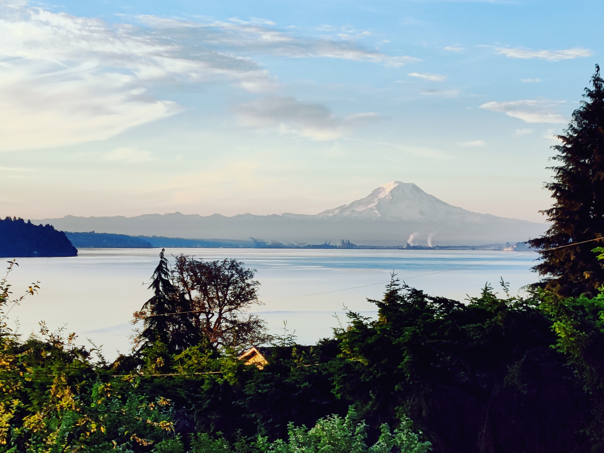
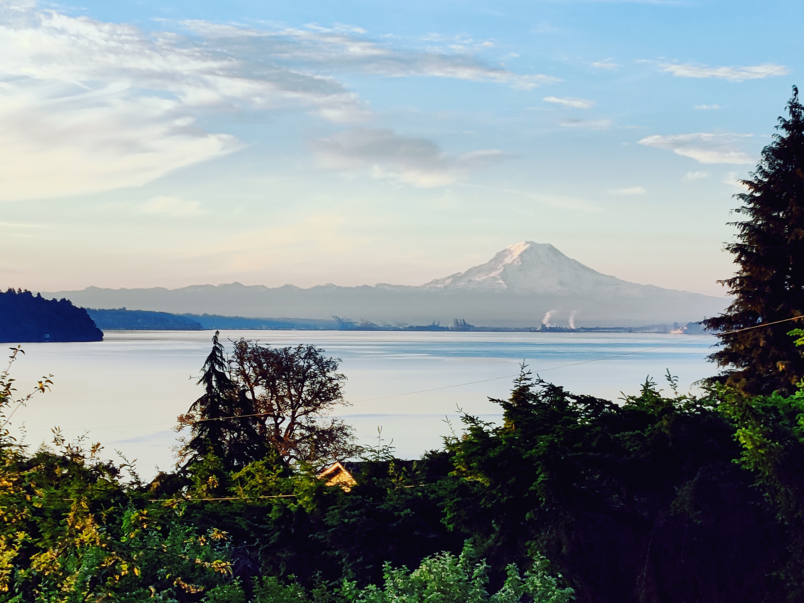

Mount Rainier
Mount Rainier, also known as Tahoma or Tacoma, is a large active stratovolcano in the Cascade Range of the Pacific Northwest, located in Mount Rainier National Park about 59 miles (95 km) south-southeast of Seattle. With a summit elevation of 14,411 ft (4,392 m), it is the highest mountain in the U.S. state of Washington and the Cascade Range, the most topographically prominent mountain in the contiguous United States, and the tallest in the Cascade Volcanic Arc. Due to its high probability of eruption in the near future, Mount Rainier is considered one of the most dangerous volcanoes in the world, and it is on the Decade Volcano list. The large amount of glacial ice means that Mount Rainier could produce massive lahars which could threaten the entire Puyallup River valley. According to the United States Geological Survey, "about 80,000 people and their homes are at risk in Mount Rainier's lahar-hazard zones."
The Summit at Snoqualmie
The Summit at Snoqualmie, is a winter resort in the northwest United States, located on Snoqualmie Pass, Washington. It provides alpine skiing and snowboarding, Nordic skiing, and winter tubing. Owned and managed by Boyne Resorts, it is 52 miles east of downtown Seattle on Interstate 90
Franklin Falls

Franklin Falls Trail is a 2 mile heavily trafficked out and back trail located near Snoqualmie Pass, Washington that features a waterfall and is good for all skill levels. The trail is primarily used for hiking, walking, running, and camping and is accessible year-round. Dogs are also able to use this trail but must be kept on leash.
Sunrise Beach Park
 

Sunrise Beach Park is a 0.4 mile lightly trafficked loop trail located near Gig Harbor, Washington that features a great forest setting and is good for all skill levels. The trail is primarily used for walking and nature trips.